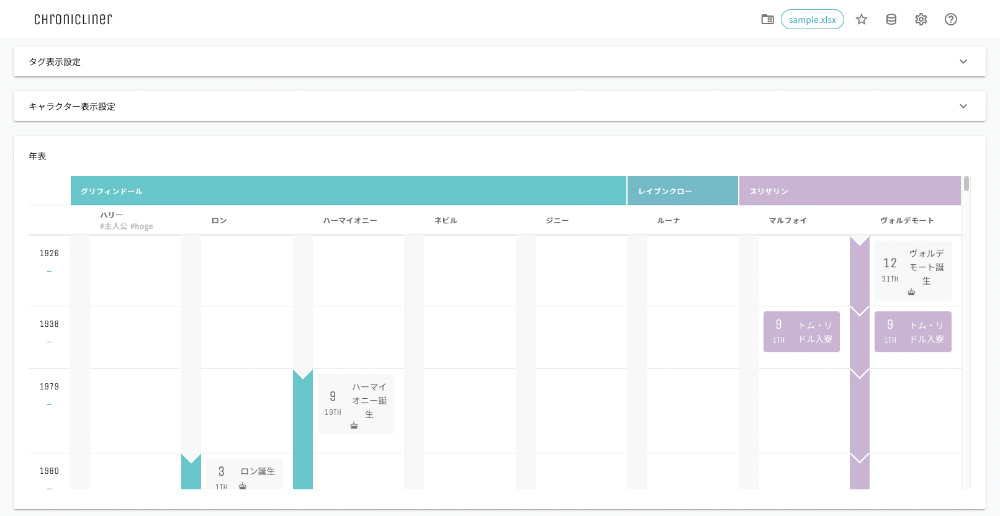

Chronicliner v2.2.0
Chroniclinerは、キャラの年齢やら学年やら時系列がわからなくなった限界同人オタク&クリエイターのために作成された年表ツールです。
警告
ver2.1.0より前のExcelファイルを使用する場合、 キャラクター 、 イベント 、 期間イベント シートに タグ 列を追加してください。
Licence
MITライセンスです。
同人・商用等での利用及び改変、改変物の配布が可能です
但し、このリソースを使用したことによる責任の一切を負いかねます
Copyright (c) 2022-2023 @shi_chikuzen Released under the MIT license
Contact
バグ報告、機能リクエスト、その他諸々は
@shi_chikuzen のDM・マシュマロ
Chronicliner Github のIssues
までお願いします。